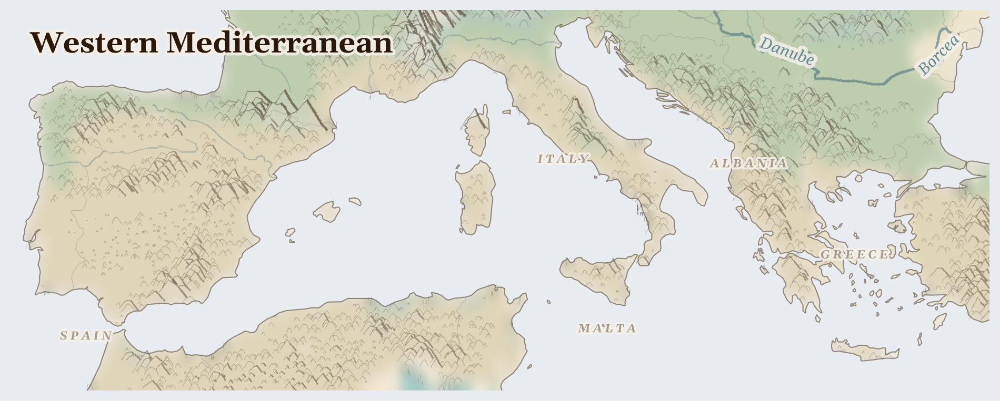

Western Mediterranean
France, Malta, Albania and 5 more countries
Palearctic
The warm blue sea where so many stories began — ringed by Spain, Italy, Greece, and their neighbours, with silvery olive groves on the hills, whitewashed villages, and harbours that have launched ships for thousands of years. The sun is generous here.
How Life Works Here
People press olives into golden oil, gather cork from the bark of special oak trees, catch fish, and welcome visitors to the sea. Great cargo ships glide across the water carrying goods between continents, steered by sailors who are far from their own homes.
Smallholder Mediterranean farmers maintaining millennial landscapes, Cork harvesters in Portugal and Sardinia (9-year bark cycle), Cooperative olive mills and wine cooperatives.
Agribusiness greenhouse operators, Migrant farmworkers from sub-Saharan Africa (informal labour, shanty town housing), Northern European supermarket chains (price pressure driving aquifer depletion).
Migrant workers from Morocco, Senegal, Mali, Ghana (seasonal and undocumented), Labour intermediaries (caporalato system in Italy), Agricultural unions attempting to regularise conditions.
What Is Happening
This is a lucky, sunny land, and much here is good. The fairness questions are quiet ones: the workers who pick the olives and crew the ships often come from poorer countries and are paid too little for hard work far from home, and the summers are growing hotter and drier. But people are working on it — fairer-pay projects for farm workers, and old villages sharing water wisely the way their grandparents did.
Something Wonderful
Cork comes from the bark of an oak tree — and you can gently peel that bark off, and the tree simply grows it back, again and again, for two hundred years. And some olive trees around this sea are so old — over a thousand years — that they were already ancient when knights rode past them. A tree can outlive a hundred human lifetimes.
Let's Do Something Together
Clean Water, Dirty Water
Put some soil in a cup of water and stir it up. Look how dirty it is! Now pour it through a cloth into another cup. The cloth catches the dirt. Many families do not have a way to clean their water. Think about how lucky we are to turn on a tap.
- two cups
- soil
- cloth or coffee filter
For grown-ups
Lack of water treatment infrastructure means waterborne disease remains a leading cause of child mortality in crisis zones. Filtration and purification require materials that are often unavailable.
Let Us Pray Together
Thank you for clean water, God. Please help children who drink dirty water.
Leader: We pray for Cyprus. For Cyprus, where multiple pressures are interacting and the situation is escalating.
All: Lord, hear our prayer.
Leader: We pray for the helpers. For humanitarian workers and missionaries in Western Mediterranean.
All: Lord, hear our prayer.
Leader: We pray for seeds of hope. For every act of resistance and care in Western Mediterranean.
All: Lord, hear our prayer.
O praise the Lord, all you nations; praise him, all you peoples. For great is his steadfast love towards us, and the faithfulness of the Lord endures for ever. Alleluia.
Collect
Lord of all power and might, the author and giver of all good things: graft in our hearts the love of your name, increase in us true religion, nourish us with all goodness, and of your great mercy keep us in the same; through Jesus Christ your Son our Lord, who is alive and reigns with you, in the unity of the Holy Spirit, one God, now and for ever.
Amen.
Talk About It
The people who pick the olives and sail the ships are often far from their families. What would help you feel at home if you were far away?
One Thing We Can Do
If there's olive oil in your kitchen, dip a little bread in it and taste the sunshine of the Mediterranean. Thank God for the pickers and the sailors, and ask that they be treated fairly.